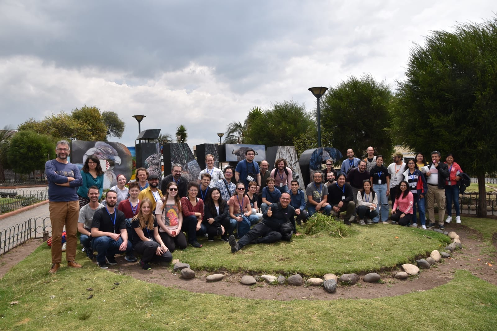
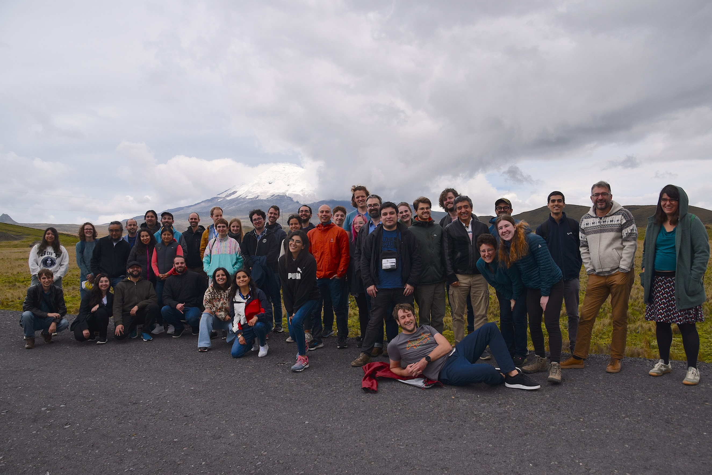
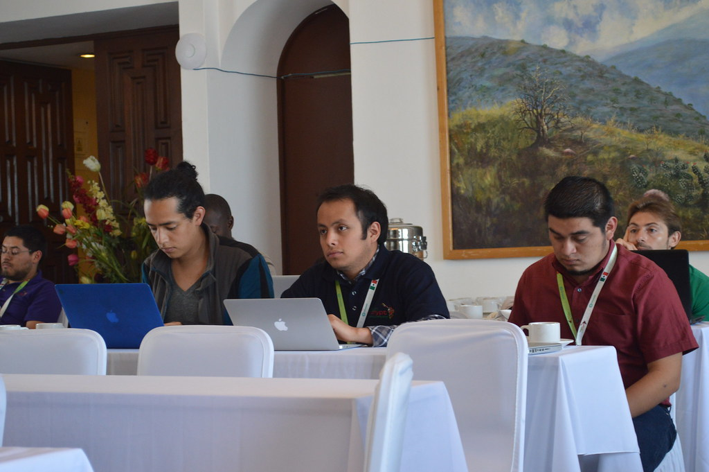
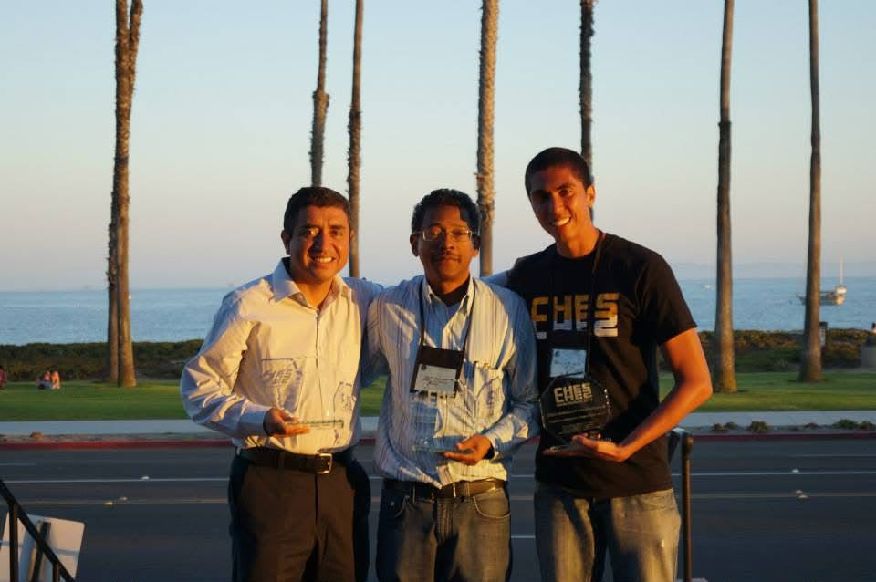

I am seeking a second term as an elected Director of the International Association for Cryptologic Research.
In 2023, I asked for your support to bring to the Board the perspective of applied cryptography and of researchers working outside the traditional centers of our field, including the Global South. Those commitments remain the basis of my candidacy.
During my first term, I served as Program Co-Chair of CHES 2024 and Co-Editor-in-Chief of TCHES, General Chair of CRYPTO 2025, Artifact Chair of Eurocrypt 2026, and Chair of the IACR Cryptology Schools and 2025 Election Committees. For 2027 to 2029, I would focus on three priorities.
1. Toward a fourth IACR General Conference


The “International” in IACR should be reflected not only in our membership, but also in where we meet and who can participate. Visa issues can prevent colleagues of many nationalities from attending conferences in Europe, North America, and elsewhere, even with accepted papers and sufficient funding. Some international graduate students working in cryptography also hesitate to travel for fear of being denied permission to return to the country where they study. A fourth General Conference could make IACR more geographically representative and open new paths to participation for members who are currently poorly served by the existing conference locations.
Fulfilling IACR’s international mission also means giving communities in Latin America and Africa the opportunity to host the international community and help shape the Association’s principal scientific meetings.
LATINCRYPT and AFRICACRYPT have established scientific strengths, international participation, and deep roots in their regions. As a co-founder of LATINCRYPT and Program Co-Chair of AFRICACRYPT 2026, I would like to contribute to the proposed IACR working group on expanding the Association’s geographic reach. I would work with colleagues from both communities to develop a proposal for a fourth General Conference. The proposal would consider who could participate, what hosting would require, and how the conference could be sustained financially, while preserving the identities and communities that have made both conferences successful.
CHES 2027 in Cancún, where I will serve as General Co-Chair, will be the first CHES held in Latin America. Bringing an established conference to the region is not the same as creating a fourth General Conference. But organizing it will give us valuable firsthand experience that I would bring to the discussions about a fourth conference.
2. Cryptology schools

Conferences alone cannot broaden participation in cryptographic research. A school gives students time to work through a subject, ask questions, and meet researchers before they have a paper to present.
During my term, IACR supported schools across several continents, including in Pakistan, Argentina, Tunisia, and Vietnam. As Chair of the Cryptology Schools Committee, I would like to strengthen this program by encouraging strong proposals from places with limited access to international cryptology events, maintaining high scientific standards, and supporting affordable student participation. The involvement of local researchers matters, as does making lecture notes and, where feasible, recordings available afterwards.
For IACR, supporting a school is a relatively small intervention. For a student who discovers a research direction, meets future collaborators, or becomes connected to the international cryptographic community for the first time, its impact can be much greater.
3. Applied cryptography and reproducible research

My research has largely been at the interface of cryptographic algorithms, software, and hardware. Implementation work can reveal constraints, attacks, and research questions that are not apparent from an abstract description.
As Eurocrypt 2026 Artifact Chair, I worked on the review and archiving of artifacts intended to let others reproduce and extend published results. I would build on these efforts by making software and hardware artifacts easier to reuse, easier to preserve, and easier to evaluate consistently. That means better documentation, reliable long-term archiving, and shared guidance for artifact committees.
Artifact expectations should match the nature of the research. Not every contribution needs an artifact, but experiments that support central scientific claims should be open to inspection, reproduction, and further development.
I would be honored to continue serving the IACR membership during 2027 to 2029.
Personal homepage · IACR Cryptology Schools · 2023 candidate statement